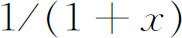
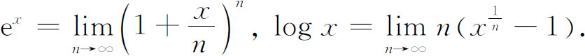
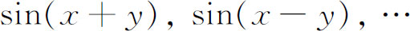
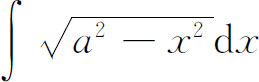
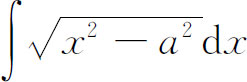
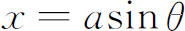
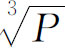
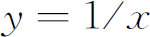
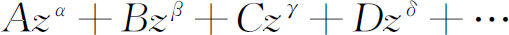

2．函数概念
正如前面已看到的，在17世纪已经引入并使用了函数的概念及简单的代数函数与超越函数。当莱布尼茨、詹姆斯·伯努利（James Bernoulli）和约翰·伯努利、洛必达（Guillaume F．A．L'Hospital）、惠更斯及瓦里尼翁（Pierre Varignon，1654—1722）处理单摆运动、固定两端的悬索的形状、曲线运动、在球上固定罗盘方位的运动（斜驶线）、曲线的渐屈线与渐开线、光在反射与折射中出现的焦散曲线以及一条曲线在另一条曲线上滚动时的路径等问题的时候，已经不仅使用了已知的函数，而且使初等函数达到相当复杂的形式。这些研究和微积分的一般工作的结果是：初等函数被充分地认识了，并实际已将它们发展成为我们今天所见到的样子。例如对数函数，它起源于几何级数与算术级数的项与项之间的关系，而在17世纪被当作求

的积分所得的级数（第17章第2节），这时它就在新的基础上被引入了。沃利斯、牛顿、莱布尼茨与约翰·伯努利对指数函数的研究表明，对数函数是性质相对简单的指数函数的反函数。1742年琼斯（William Jones，1675—1749）给出了这种样子的关于对数函数的系统介绍（第13章第2节）。欧拉在《引论》一书中定义这两个函数为
三角函数的数学也系统化了。牛顿和莱布尼茨给出了这些函数的级数展开式。两个角的和与差的三角函数

的公式的发展应归功于一批人，其中有约翰·伯努利与拉尼（Thomas Fantet de Lagny，1660—1734），拉尼1703年在巴黎科学院《记要》（Mémoires）上写了一篇这个题目的文章。此后迈尔（Frédéric-Christian Mayer，生卒日期不明），圣彼得堡科学院的第一批成员，在和差公式的基础上推导了解析三角的一般恒等式(2)。最后，欧拉于1748年在关于木星和土星运动中的不等式的一篇得奖文章中给出了三角函数的一个十分系统的处理(3)。在欧拉1748年的《引论》中已经搞清了三角函数的周期性，并引入了角的弧度(4)。当注意到圆弧下的面积由

给出，而双曲线下的面积由
给出时，双曲函数的研究便开始了。由于两者相差一个符号，并且圆弧下面的面积可用三角函数表示（令
），而双曲线下的面积又与对数函数有关，那么在三角函数与对数函数之间就应该存在一个含有虚数的关系。这个想法被许多人发展了（见第3节）。最后，兰伯特（Johann Heinrich Lambert）全面地研究了双曲函数(5)。约翰·伯努利已将函数概念公式化。欧拉在他的《引论》的一开头，就把函数定义为由一个变量与一些常量通过任何方式形成的解析表达式。他概括了多项式、幂级数、对数表达式与三角表达式。他还定义了多元函数。随着就有代数函数的概念，在代数函数中只有自变量间的代数运算，而代数运算又可分为两类：只包含四则运算的有理运算与还包括开根的无理运算。他又引入了超越函数，即三角函数、对数函数、指数函数、变量的无理数次幂函数及某些用积分表达的函数。
欧拉写道，函数间的原则区别在于组成这些函数的变量与常量的组合法不同。他补充道，例如超越函数与代数函数的区别在于前者重复后者的那些运算无限多次；也就是说，超越函数可用无穷级数给出。欧拉和与他同时代的人们都不认为有必要去考虑无穷尽地应用四则运算而得到的表达式是否有效的问题。
欧拉区分了显函数与隐函数，单值函数与多值函数，把多值函数当成两个变量的高阶方程的根，这高阶方程的系数是一个变量的函数。这里，他说，如果一个函数是实变量的实值函数（例如

，其中P是一个单值函数），则它大多能包括在单值函数中。从这些定义（它们不免有矛盾）欧拉转向有理整函数或多项式。欧拉断言这样的实系数函数能分解为一阶或二阶实系数因子的积（见第4节与第25章第2节）。至于连续函数，欧拉像莱布尼茨及18世纪的其他作者一样，把它当作由解析式规定的函数，他的“连续”一词，实际上是我们所说的“解析”（除个别的如

的不连续点之外）(6)。他还认识到了其他的函数，代表这些函数的曲线被称为“无意识的”或“随意画的”。欧拉的《引论》是第一部首先突出函数概念并把它作为该书二卷内容的基础的著作。这本书的某些精神可以从欧拉关于函数的幂级数展开的一些评论中收集到(7)。他断言任何函数都能这样展开，但又说：“如果谁怀疑每个函数都能这样展开，那么这个怀疑就将被实际展开了的函数所排除。然而，为了使现在的研究能推广到最广泛的可能的领域，除z的正整数幂外，应允许包含任意指数的项。于是无可争辩的是每一个函数都能展开成

的形式，其中α，β，γ，δ，…可以是任何数。”欧拉按照他自己和所有他同时代人的经验坚信所有函数都能展成级数。而事实上，在那时，所有用解析表达式给出的函数的确都可以展成级数。虽然，在弦振动问题（见第22章）中发生了关于函数概念的争论，并促使欧拉去推广自己关于什么是函数的概念；然而18世纪占统治地位的函数概念仍然是函数是由一个解析表达式（有限的或无限的）所给出的。例如，拉格朗日在他的《解析函数论》（Théorie des fonctions analytiques，1797）一书中把一元或多元函数定义为自变量在其中可以按任何形式出现并对计算有用的表达式。在《函数计算教程》（Leçons sur le calcul des fonctions，1806）中，他说：“函数代表着要得到未知量的值而对已知量必须要完成的那些不同运算，未知量的值本质上只是计算的最终结果。”换句话说，函数是运算的一个组合。